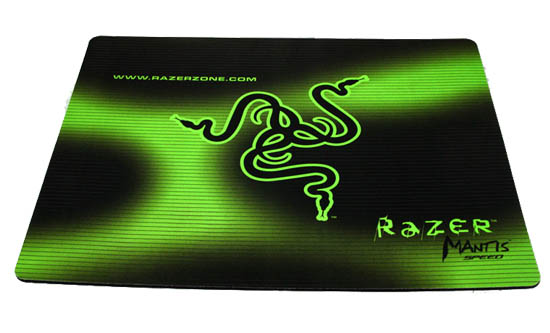

Добро пожаловать на один из крупнейших интернет-магазинов игровых девайсов в СНГ
Razer Mantis Speed

Razer Mantis — новое поколение высокоточных игровых ковров, созданных геймерами для геймеров (For Gamers, By Gamers). Ковры изготавливаются из превосходной ткани Fibertek, обеспечивающей высокоточное гладкое перемещение мыши. Ковры Razer Mantis выпускаются в двух видах — SPEED и CONTROL — для геймеров предпочитающих высокую и низкую чувствительность мыши в игре. Огромный размер ковра Razer Mantis позволяет выполнять более точные перемещения мыши.
- Материал рабочей поверхности: ткань
- Стиль: Razer
- Цвет: рисунок, чёрный, залёный
- Подушка под запястье: нет
- Длина: 355мм
- Ширина: 444мм
- Толщина: 4.3мм
- Материал основания: резина
- Тип поверхности: speed
- Цена: $23